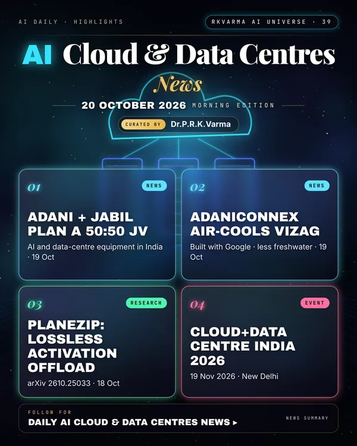

Latest updates · 20 October 2026
In the full issue →India's data-centre build-out is accelerating: Adani Enterprises and Jabil plan a 50:50 joint venture for AI and data-centre equipment, AdaniConneX will air-cool its Vizag sites with Google, and Equinix aims to more than triple its India capacity.
Research, industry & policy
- Adani Enterprises and Jabil sign MoU for a 50:50 JV (India), NBM&CW · 19 Oct 2026: The joint venture would make AI and data-centre equipment in India.
- AdaniConneX's Vizag data centres to use air cooling (India), Economic Times · 19 Oct 2026: The Visakhapatnam sites, built with Google, will use air cooling to cut freshwater use.
- Equinix plans India expansion from 20 MW to 70 MW (India), Business Standard · 19 Oct 2026: India MD Manoj Paul says AI could drive growth beyond traditional hubs over the next two to three years.
- Is Visakhapatnam ready for a hyperscale data centre?, The Christian Science Monitor · 19 Oct 2026: Google has broken ground on a proposed 1 GW site, but questions about resources and funding remain.
Journals & preprints
- PlaneZip: Lossless Bit-Plane Compression of Training Activations Offloaded over PCIe, arXiv 2610.25033 · 18 Oct 2026: Training under a device-memory budget relies on tensor rematerialization: an evicted activation is either swapped to host memory or dropped and recomputed.
- Degradation Aware V2G Dispatch for Co-Optimization of Parking Facility and Edge Data Center Located in the Airport Campus, arXiv 2610.24797 · 17 Oct 2026: This paper studies an airport campus where long stay EV parking, airport buildings, and an AI data center share a single grid connection.
Conferences, workshops & events
- Cloud+Data Centre India 2026, 19 Nov 2026 · New Delhi (Le Méridien): 12th edition; AI-driven data-centre growth in India.
- Civo Navigate India 2026 – Sovereignty and AI edition, 24 Nov 2026 · Bengaluru: Cloud, AI and DevOps conference.
- ET AI Data Center Masterclass, 3 Dec 2026 · Mumbai: In-person masterclass on AI data-centre infrastructure.
Why it matters
India wants to host and also equip AI infrastructure; water, power and supply chains will decide how fast it can scale.

